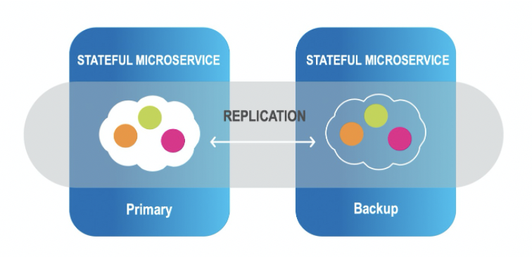
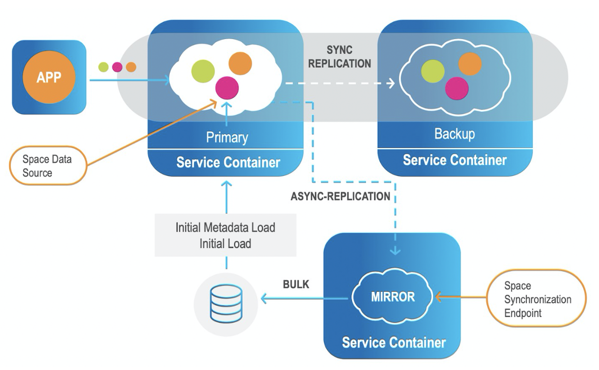
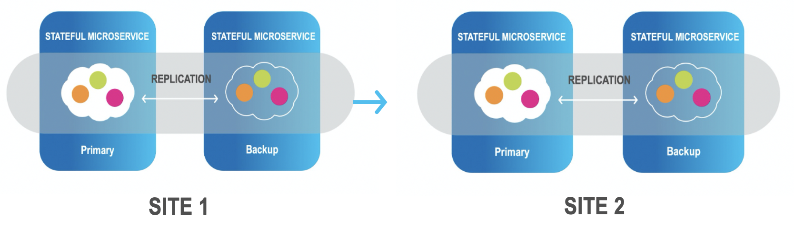

Smart Augmented Transactions provides real-time feedback on business operations, rapid innovation on insight-driven workloads, and the ability to unlock live operational intelligence across the business. The in-memory computing platform delivers the necessary components of a cloud-native translytical architecture that combines transactions and analytics workloads in a single platform to empower real-time analytics immediately over transactional data.
Smart Augmented Transactions System Overview
The Smart Augmented Transactions environment can be illustrated as follows:

Architecture of Smart Augmented Transactions
1A. One-Click Connect to Data Sources

One-Click connect interface
1B. Augmenting an Existing ODS
When an existing Operational Data Store is already deployed, Smart Augmented Transactions can augment it to gain better performance, indexing, data integration and ETL replacement. It can be done by either mirroring the ODS actions to the data stores, or by using Smart Augmented Transactions’s built-in Change Data Capture (CDC) that connects directly with your systems of record, non-intrusively (agentless).
Data ingestion from the CDC is in millisecond latency and keeps the ODS always in sync with all the different data sources. This is delivered as part of Smart Augmented Transactions with unified installation and orchestration.
2. Automated Data Tiering
Data is stored in multiple data storage tiers — hot (in-memory), warm (SSD), and cold (disk/external data store)
User-defined business rules allows you to place the most important data in hot storage, while other data can be in warm or cold storage.

"Important" does not necessarily mean "most frequently accessed" — for example, your business rules may place premium customers in hot storage, even if their data is less frequently required.
3. High Availability and Remote Replication
InsideEdge Smart Augmented Transactions is an enterprise-grade product that provides 5-nines availability. The platform is highly available by having primary and backup instances of data partitions.

Additionally, the platform provides for tier storage and disk persistency, with built-in mirroring service to external databases including initial load and store to the database.

In addition, XAP provides efficient data replication between sites (Active-Passive/Active-Active) including hybrid environments.

XAP allows users to utilize rich support for declarative transaction management. The declarative transaction support can be easily utilized with the GigaSpace Interface.

4. High Performance Micro-Services Framework
GigaSpaces supports Task execution in an asynchronous manner, co-located with the Space (Processing Unit that started an embedded Space). Tasks can be executed directly on a specific cluster member using routing declarations. Tasks can also be executed in “broadcast” mode on all the primary cluster members concurrently, and reduced to a single result on the client side.
A Distributed Task a Tasks that is executed more than once (concurrently). It returns a result that is the reduced product of all operations. This reduction is calculated in the Task’s reduce method.
Phase 1 - Sending the Tasks to be executed:

Phase 2 - Getting the results back to be reduced:

Co-locating data and code significantly improves application performance by reducing serialization and networking overhead. Data processing is performed locally by direct memory access to the data in the server memory space.

The XAP platform provides a unified capability for distributed data and processing, which enables it to easily scale up and out, using a single API.

Having a unified processing and data storage platform encapsulates all of the required features for keeping the data and processing highly available under the same API framework. In addition, a fast remote replication facility is provided out of the box, including encryption, compression, and filtering or other custom requirements.

XAP ODS provides the user with a rich API to capture of real-time events and data streams, to automatically trigger notifications, based on defined business logic. Digital apps and external business processes can easily subscribe to any event in pull or push mode without impact on performance.

6. APIs

Smart Augmented Transactions APIs
Smart Augmented Transactions supports the full SQL-99 standard, allowing complex queries to be performed with optimal speed and minimal memory footprint. Standard SQL requests used for relational data manipulation can be used without requiring source code changes.
Using Java and .NET APIs, advanced capabilities are available — such as object store, and various data modeling options.
InsideEdge features native integration with Kafka to consume and produce data to and from Kafka topics.
REST-API and command line interfaces are also available.
Smart Augmented Transactions can easily integrate with BI tools such as Tableau, Looker, and PowerBI.
6. Advanced Analytics
XAP Augmented Transactions natively integrate with open source analytics machine learning platforms, such as Apache Spark and SparkML, TensorFlow, as well as Jupyter and Zeppelin notebooks.
XAP Built-In Spark Distribution
Applications leverage faster and smarter insights from ML models running on any data source whether structured, unstructured or semi-structured.

XAP Multi-Modal Data Store
Smart Augmented Transactions enhances the Agile Spark predicate pushdown capability by leveraging our native advanced indexing mechanism, to retrieve only relevant data entries when running a query (filter). This ability to filter directly on the source (instead of on the target as is done in the vanilla Apache Spark architecture) dramatically improves performance and reduces network overhead.
AnalyticsXtreme
XAP enables the combination of real-time and historical data by having a single framework that includes both cold and hot data for real-time analytics, which can run simultaneously on both real-time, mutable streaming data and on historical data that is stored on data lakes based on Hadoop, Amazon S3 or Azure Blob Storage, without exposing a separate data load procedure or data duplication. Moving from on-premise to the cloud, or changing technology stacks for example from Cloudera to Amazon S3, is seamless to machine learning applications; increasing flexibility while reducing development and maintenance.
With AnalyticsXtreme, the data is available for immediate searching, queries, and running analytics; there is a single logical view for hot, warm and cold data. The hot data resides on XAP’s in-memory data grid, while cold (historical) data can be stored on any big-data platform such as HDFS or Amazon S3. Additionally, the hot data is mutable, supporting real-time updates. The data becomes immutable when it is stored on the external big data platform.
This approach enables smooth access to frequently used historical data, because applications can access any data - hot or cold - via a unified layer using Spark SQL or JDBC. You can easily integrate BI tools such as Tableau, Looker, and PowerBI. It also ensures that every entry is retrieved only once, from the correct layer. AnalyticsXtreme provides automatic life cycle management, handling the underlying data movement, optimization and deletion using an internal data life cycle policy.

Deploy Anywhere
Deployment options include:
-
One-click deployment across any scale and environment, on-prem, cloud or hybrid
-
Hot rolling deployment, upgrade, monitoring, scaling and recovery, all with no downtime
-
Support of both Kubernetes, OpenShift, or built-in ElasticGrid orchestration systems

Multiple deployment options of Smart Augmented Transactions